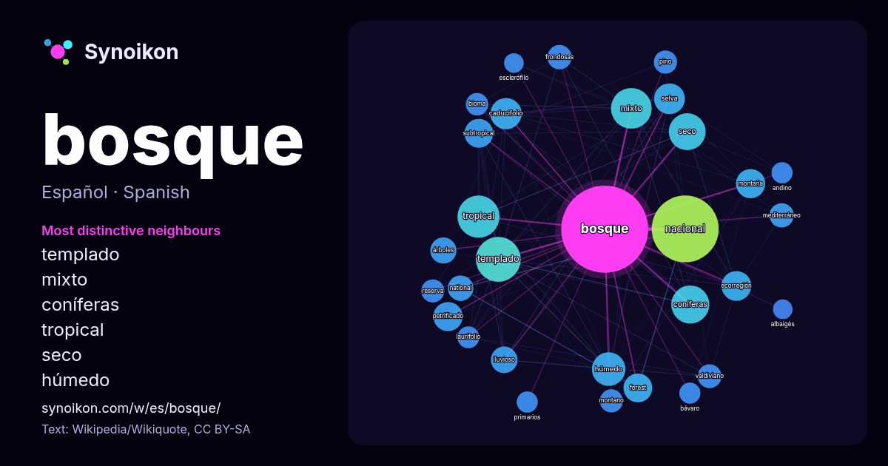

Español · lista de palabras del día
bosque
“forest” · Las palabras encontradas a su alrededor en 1477 apariciones de Wikipedia, Wikiquote.

Vecinos más característicos
- templado 64×
- mixto 52×
- coníferas 49×
- tropical 44×
- seco 39×
- húmedo 35×
- caducifolio 33×
- ecorregión 30×
- petrificado 30×
- selva 28×
- forest 28×
- subtropical 27×
- nacional 27×
- lluvioso 24×
- frondosas 21×
- valdiviano 20×
- national 19×
- montaña 19×
- montano 18×
- bioma 18×
× = cuántas veces más que en el texto general de Wikipedia.
Vecinos más frecuentes
- nacional 151
- templado 68
- tropical 60
- mixto 56
- unidos 54
- coníferas 49
- seco 46
- tipo 39
- húmedo 38
- caducifolio 33
- selva 32
- ecorregión 30
- montaña 29
- petrificado 29
- forest 28
- subtropical 28
- lluvioso 24
- árboles 23
- área 23
- llamado 23
En contexto
- hojas anchas, como el bosque mediterráneo y la laurisilva (bosque de hojas laurifoliadas). Bosque subtropical: Incluyen a los bosques de clima subtropical Wikipedia snippets · Bosque
- tipos de bosques tropicales son: el bosque tropical seco, el bosque tropical húmedo o lluvioso, el bosque tropical monzónico; y los bosques tropicales Wikipedia snippets · Bosque tropical
- Un bosque nuboso, bosque nublado, selva nublada, nimbosilva o bosque mesófilo de montaña, es generalmente un bosque húmedo montano tropical o subtropical Wikipedia snippets · Bosque nuboso
- tipos de bosque: Bosque boreal o taiga Bosque templado de coníferas Bosque subtropical de coníferas A estos tipos, habría que añadir el bosque subalpino Wikipedia snippets · Bosque de coníferas
- Bosque en galería, bosque-galería, bosque de ribera o soto, son denominaciones de la formación vegetal o bosque caracterizado por su vinculación a la Wikipedia snippets · Bosque en galería
- El bosque magallánico, también llamado taiga magallánica, bosque subpolar magallánico o bosques subantárticos de Magallanes es una ecorregión del extremo Wikipedia snippets · Bosque magallánico
- continente, de los grandes bosques de la antigüedad (Bosque de las Ardenas, Bosque Hercínico), solo subsisten algunos bosques tales como el de Białowieża Wikipedia snippets · Bosque primario
- El bosque y matorral mediterráneo o durisilva es un bioma de bosques y matorrales que se desarrolla en regiones con clima mediterráneo, caracterizado Wikipedia snippets · Bosque y matorral mediterráneo
Más palabras
- agua
- arte
- caballo
- camino
- campana
- canción
- ciencia
- ciudad
- clima
- comida
- corazón
- desierto
- dinero
- dios
- espejo
- estrella
- familia
- fuerza
- gato
- historia
- invierno
- isla
- jardín
- lengua
- lluvia
- madre
- mapa
- miel
- montaña
- muerte
- naturaleza
- oro
- otoño
- pan
- perro
- puente
- reloj
- sal
- salud
- silencio
- sombra
- tiempo
- tormenta
- trabajo
- tren
- té
- verano
- verdad
- vida
Precalculado el 2026-10-09 con los ajustes predeterminados (±5 palabras, corpus mediano). El mapa interactivo puede actualizarlo con datos en vivo.
Interfaz traducida automáticamente; se agradecen correcciones.